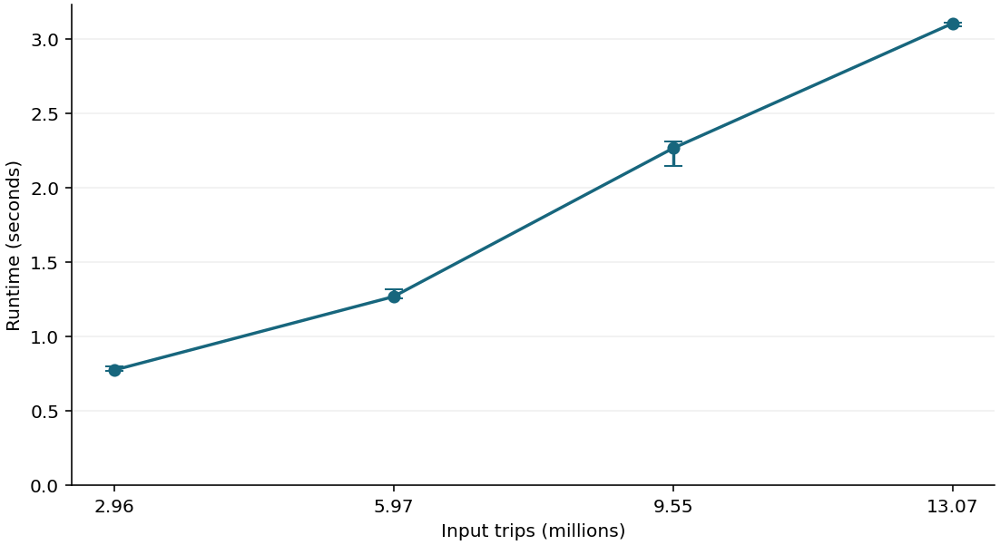
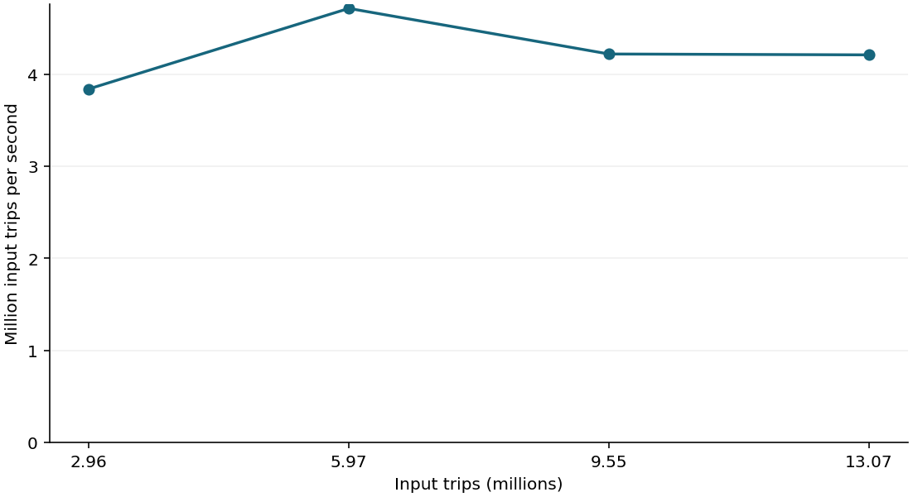
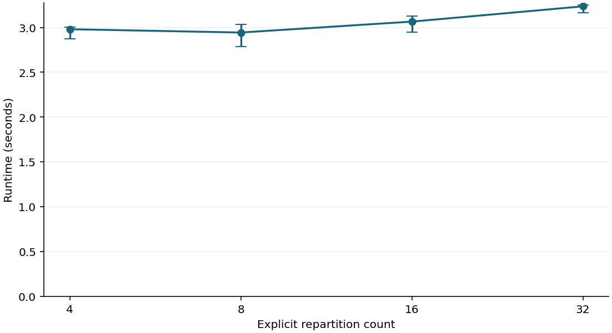
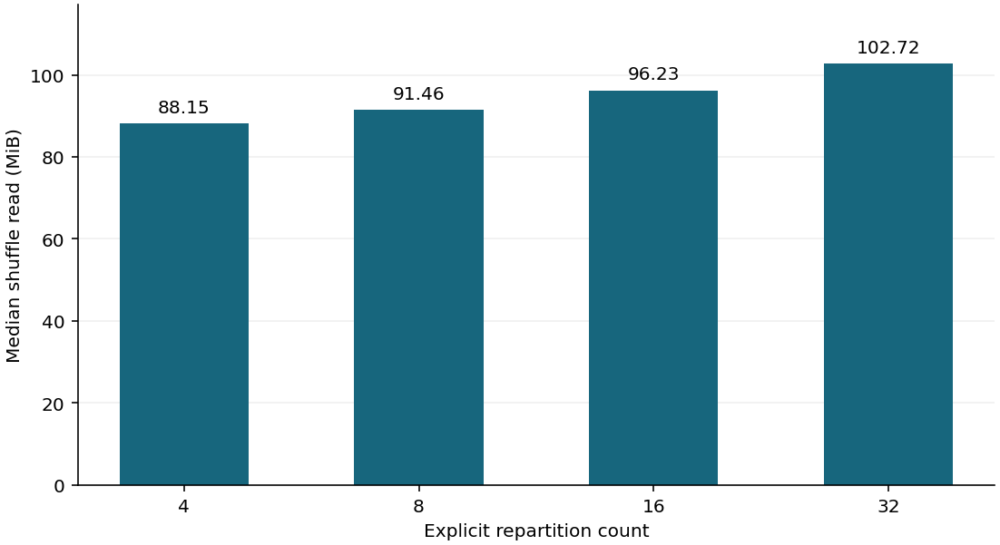
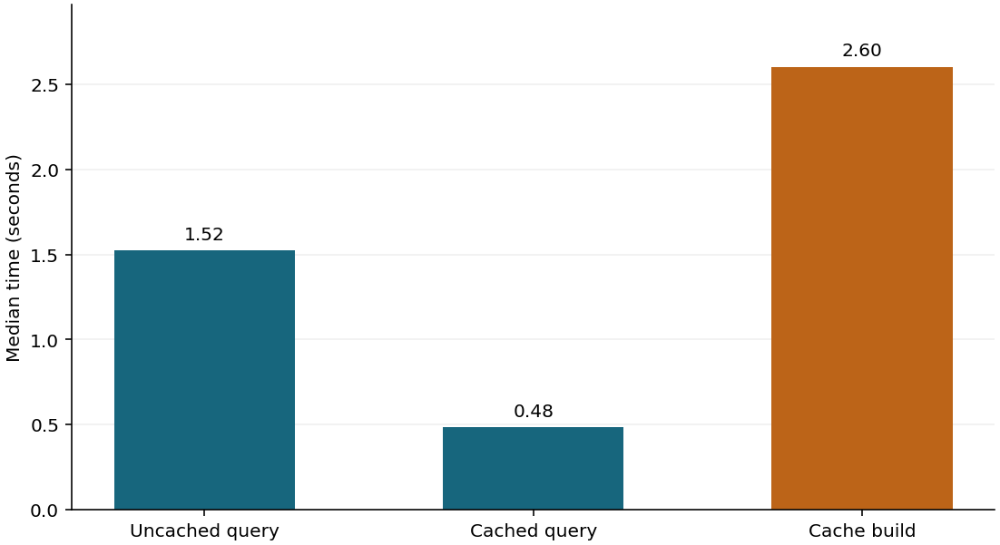

NYC Taxi Analytics
NYC Yellow Taxi trips, January through April 2024. Spark benchmark started 2026-11-24 (UTC).
Input size · Partitions · Caching
· Data and run files
Input size
The hourly pickup query uses the same settings as monthly files are added in order.
| Months | Input rows | Clean rows |
Median seconds |
|---|
| 1 | 2,964,624 | 2,926,295 | 0.772 |
|---|
| 2 | 5,972,150 | 5,892,352 | 1.267 |
|---|
| 3 | 9,554,778 | 9,415,372 | 2.264 |
|---|
| 4 | 13,069,067 | 12,870,983 | 3.104 |
|---|
Query time by input size
Dots show medians. Bars show the shortest and longest trials.
Trips read per second
Throughput uses input rows before cleaning.
Partitions
The lowest median in this run was 2.944 seconds at
8 partitions. The route query groups by pickup hour and both zone IDs,
ranks the most common routes, then joins the zone lookup twice.
| Repartition count | Median seconds |
Median shuffle read (MiB) | Peak stage tasks |
Widest stage median / max task (ms)* |
|---|
| 4 | 2.981 | 88.1 | 8 | 23 / 27 |
|---|
| 8 | 2.944 | 91.5 | 8 | 104 / 109 |
|---|
| 16 | 3.065 | 96.2 | 16 | 58 / 79 |
|---|
| 32 | 3.236 | 102.7 | 32 | 42 / 49 |
|---|
*Median across trials of the widest stage's median and maximum executor task times.
If stages have the same task count, this uses the one that read more shuffle data.
Route query time after repartitioning
The SQL shuffle setting stays at eight.
Shuffle volume by repartition count
Local and remote shuffle bytes read, summed for each trial.
Caching
The route query took 1.522 seconds uncached and
0.485 seconds cached. The cache took 2.603
seconds to build and held 239.8 MiB in memory and
0.0 MiB on disk. At the measured medians, the build cost is recovered after about 3 queries.
Route query time with and without caching
Building the cache is a separate Spark action.
Every measured route trial returned the same result hash across the partition and cache settings.
Data and run files
Apple M4, 16 GiB RAM. Local Parquet. OS file cache left in place. Cases ran in config order in one Spark session.
Exact settings · Trial timings ·
Stage metrics · TLC download manifest
Fare by pickup zone · Hourly pickups · Routes by hour · Top zones · Trip stats by time